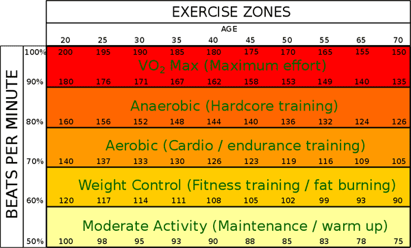

Pace Calculator
Use the following calculator to estimate the pace for a variety of activities, including running, walking, and biking. The calculator can also be used to estimate the time taken or distance traveled with a given pace and time or distance.
Multipoint Pace Calculator
The following calculator can determine the pace of segments of a run (or other activity) for those with access to the time at intermittent points during the run. For example, if a person runs from point A to point B, then to point C, records the time at each point, and subsequently determines the distance between those points (using many available websites, applications, or maps), the multipoint calculator can determine how fast the person traveled between each pair of points, allowing use for training purposes; a person can run the same route (or distance) repeatedly and track pace over that given route, enabling comparison of times between each segment (or lap) to identify areas for potential improvement.
Pace Converter
Finish Time Calculator
The following calculator can be used to estimate a person's finish time based on the time and distance covered in a race at the point the calculator is used.
Typical Races and World Record Paces
| Category | Men's World Record Pace | Women's World Record Pace |
| 100 meters | 2:35/mile or 1:36/km | 2:49/mile or 1:45/km |
| 200 meters | 2:35/mile or 1:36/km | 2:52/mile or 1:47/km |
| 400 meters | 2:54/mile or 1:48/km | 3:12/mile or 1:59/km |
| 800 meters | 3:23/mile or 2:06/km | 3:48/mile or 2:21/km |
| 1,500 meters | 3:41/mile or 2:17/km | 4:07/mile or 2:34/km |
| 1 mile | 3:43/mile or 2:19/km | 4:13/mile or 2:37/km |
| 5K | 4:04/mile or 2:31/km | 4:34/mile or 2:50/km |
| 10K | 4:14/mile or 2:38/km | 4:45/mile or 2:57/km |
| Half Marathon (13.11 miles / 21.098 km) | 4:27/mile or 2:46/km | 4:58/mile or 3:05/km |
| Marathon (26.22 miles / 42.195 km) | 4:41/mile or 2:55/km | 5:10/mile or 3:13/km |
Training Through Pace and Heart Rate
Pace is a rate of activity or movement, while heart rate is measured as the number of times that a person's heart contracts over a minute. Pace and heart rate have a positive correlation; higher pace corresponds to higher heart rate. The use of both in training can help a person improve performance, avoid over-training, as well as track progress and fitness over time.
Measuring and Estimating Heart Rate and Heart Rate Zones:
Heart rate can be measured in different ways, from using devices such as heart rate monitors, to simply looking at a watch while measuring pulse at some peripheral point such as the wrist or neck. Some of the more notable measurements of heart rate include resting heart rate and maximum heart rate, which are often used to estimate specific target heart rate zones to determine different levels of exercise.
Typical adult resting heart rates (RHR) are commonly cited to range from 60-100 beats per minute (bpm), though there is some argument that normal RHRs actually fall within the range of 50-90 bpm. Generally, a lower RHR indicates more efficient heart function, though RHRs that are lower than 50 bpm can be a sign of an underlying heart condition or disease. The same is true of RHRs above 90 bpm.
Maximum heart rate (MHR) is most accurately measured using a cardiac stress test, which involves measuring a person's heart function (including heart rate) at periodically increasing levels of exercise. These tests typically range from ten to twenty minutes in duration, which can be inconvenient. As such, there are many estimates for MHR based on age, which is strongly correlated with heart rate, though there is little consensus regarding which formula should be used. The most commonly cited formula for calculating MHR is:
MHR = 220 – age
Although it is the most commonly cited formula, and is often used to determine heart rate training zones, it does not have a reference to any standard deviation, and is not considered a good predictor of MHR by reputable health and fitness professionals. Furthermore, MHRs vary significantly between individuals, even those with highly similar training and age within the same sport. Nevertheless, MHR determined using the above formula is often used to prescribe exercise training heart rate ranges, and can be beneficial as a reference. Note that an exercise intensity level of 60-70% of maximum heart rate is considered the ideal range for burning fat. Refer to the figure below for further detail.

Aerobic vs. Anaerobic Exercise:
Aerobic and anaerobic exercise are often mentioned in the context of endurance training and running. These types of exercise mainly differ based on the duration and the intensity of muscular contractions and the manner in which energy is generated within the muscle. Generally, anaerobic exercises (~80-90% MHR) involve short, intense bursts of activity while aerobic exercises (~70-80% MHR) involve light activity sustained over a long period of time. An exercise intensity level of 55-85% of MHR for 20-30 minutes is generally recommended to attain the best results from aerobic exercise.
In solely aerobic exercise, there is sufficient oxygen for a person's muscles to produce all the necessary energy for the exercise. In contrast, in anaerobic exercise, the cardiovascular system cannot supply muscles with oxygen quickly enough, and muscles break down sugar to supply the necessary energy, resulting in excess of lactate (a byproduct of glucose metabolism). Excess lactate causes the burning sensation in muscles typical of anaerobic exercises and eventually makes the continuation of exercise not possible if excess lactate is not allowed sufficient time to be removed from the bloodstream. Note that although lactate is also produced in aerobic conditions, it is used almost as quickly as it is formed at low levels of exercise, and only trace amounts leak into the bloodstream from the muscles.
Understanding aerobic exercise is particularly important when training for a long-distance activity such as a marathon. Determining a pace that can be maintained while using energy primarily derived through aerobic means, referred to as an "aerobic threshold pace," helps maintain a balance between fat and carbohydrate utilization. This pace requires a relatively low level of intensity, and is usually maintainable for a few hours. Increasing aerobic threshold pace allows for a faster sustainable pace and is a large aspect of many marathon training programs.
An anaerobic threshold pace is defined by some as the threshold at which glycogen, rather than oxygen, becomes the primary source of energy for the body. Note that while anaerobic training will result in a person becoming more fit overall, it is not necessarily ideal training for a marathon, since an anaerobic pace is not sustainable for long periods of time. This is not to say that a person should not perform any anaerobic training, as training at or slightly above their anaerobic threshold (the level of exercise intensity at which lactic acid builds up more quickly than it can be removed from the bloodstream) can also be beneficial.
Similarly to heart rate, the most accurate way to determine these thresholds is through testing within a lab setting. However, both aerobic and anaerobic thresholds can also be estimated using a number of different methods, some of which involve the use of a heart rate monitor. According to a 2005 study, the most accurate way to determine anaerobic threshold (outside of blood work in a lab) is a 30-minute time trial in which heart rate is monitored. In this time trial, a person must run at maximum effort, averaging their heart rate over the last 20 minutes of the run. The average heart rate over the last 20 minutes is an estimation of the person's anaerobic threshold heart rate, also known as lactate threshold heart rate (LTHR). It is important that the time trial be performed alone. If it is done in a group setting, the duration must be increased to 60 minutes rather than 30 minutes. Aerobic threshold heart rate can be estimated by subtracting 30 beats per minute from the anaerobic threshold heart rate.
Essentially, threshold training involves training to postpone the point at which lactate starts to build up in the bloodstream, which effectively postpones the point of fatigue, potentially allowing a person to run farther and faster.